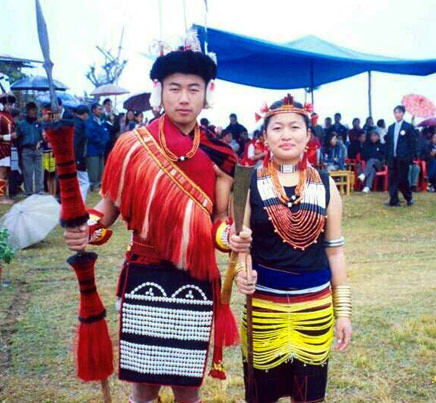
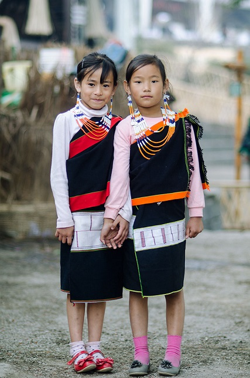
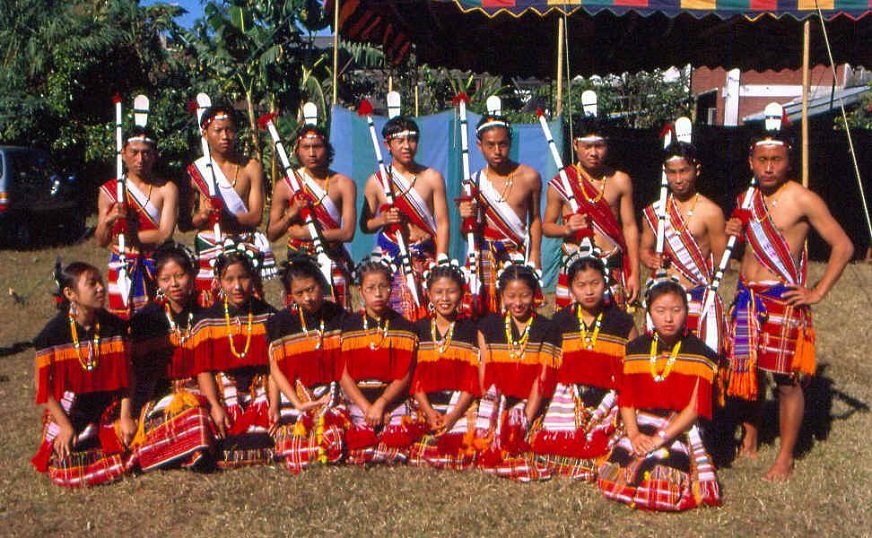
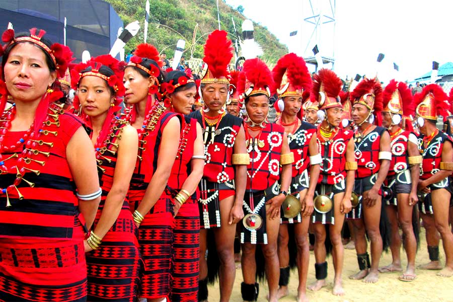
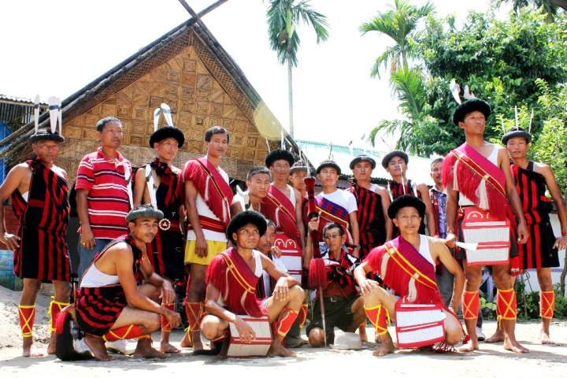
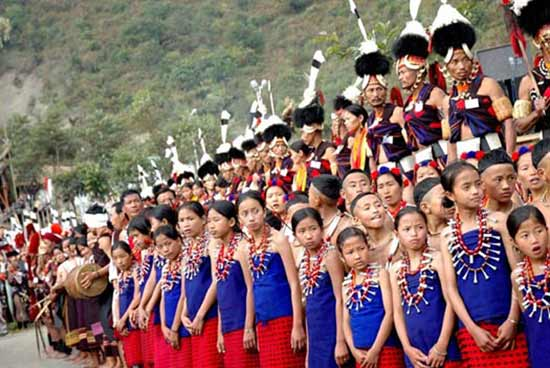
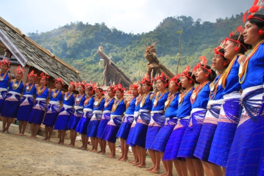

Nagaland
- Home
- Food

- Fashion
   
- Festival
- Hornbill Festival
- Tuluni Festival

Tuluni Festival
The most significant festival celebrated by the Sumi Naga tribe of Nagaland is the Tuluni Festival. This festival is celebrated to rejoice the most abundant and fruitful season of the year in Nagaland. The Sumi tribe in Nagaland celebrates the Tuluni Festival with splendor and grandeur. During the Tuluni Festival there are prayers and offerings that are given to Litsaba, who is the deity of fruitfulness who gives life and protection to the crops.
 Hornbill Festival
The eagerly awaited Hornbill Festival, is one of the most cherished festivals of Nagaland, India’s Far North Eastern state and celebrated by locals with much enthusiasm and zeal. The festival is named after Hornbill, one of the most venerated bird species in the state whose importance is reflected in a number of tribal cultural expressions, songs and dances. Almost 85% of Nagaland’s population still depends upon agriculture, so most of their festivals revolve around agriculture which they consider sacred. The Hornbill Festival is one of the largest celebrations of the indigenous warrior tribes of Nagaland. - Tuluni Festival
- Hornbill Festival